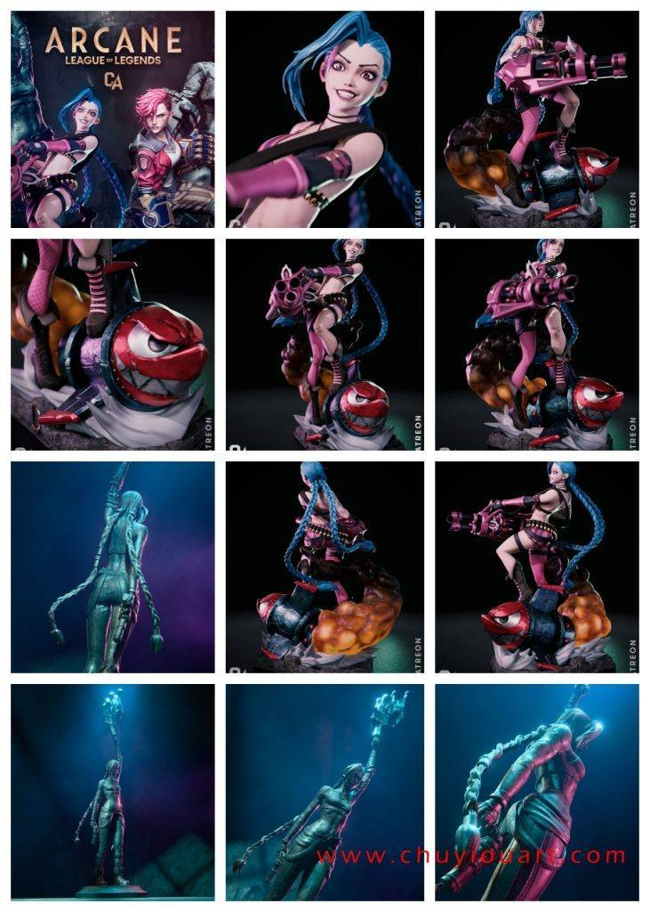
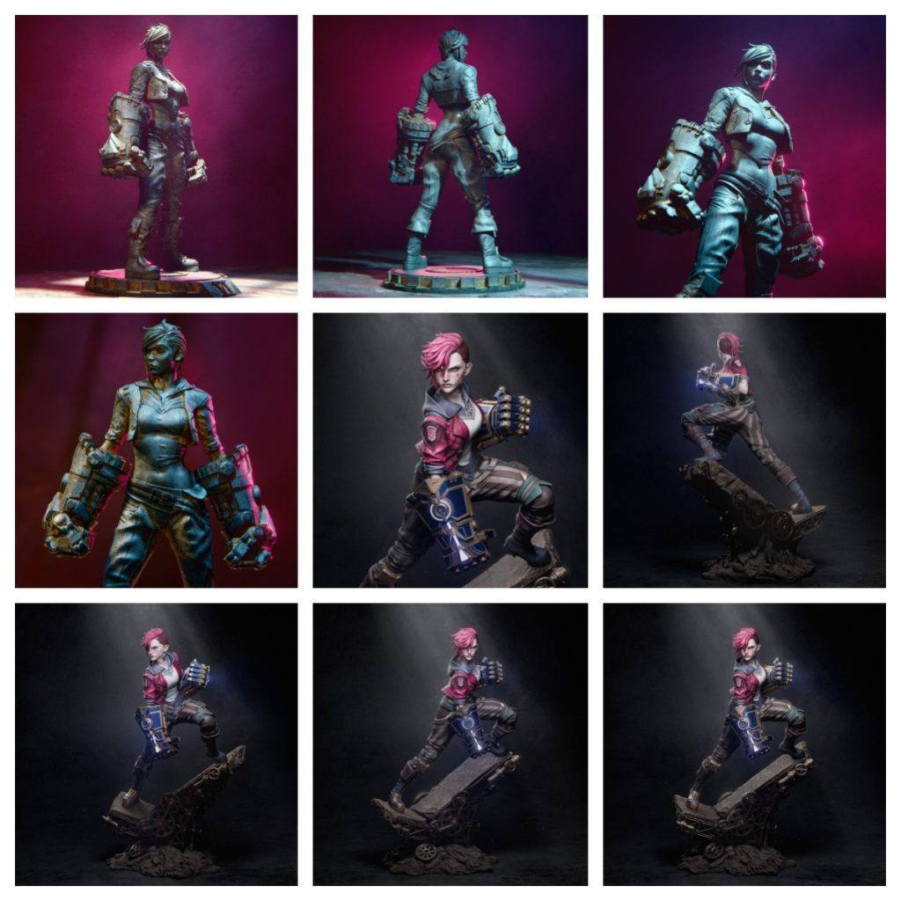
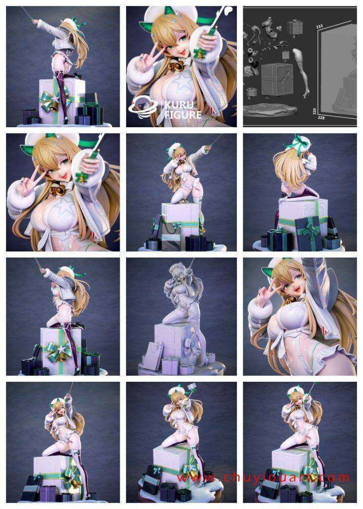
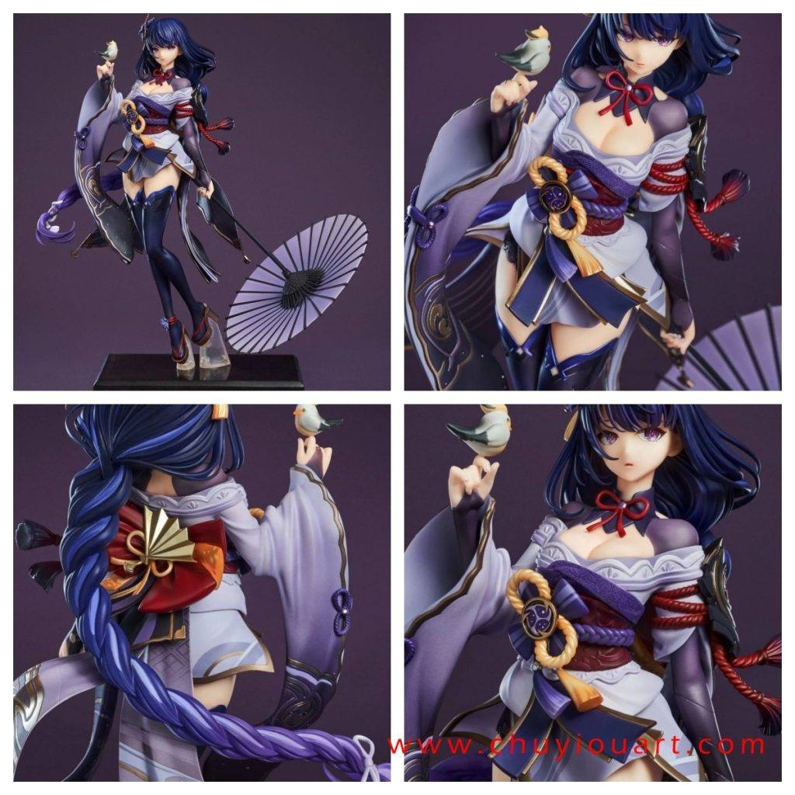
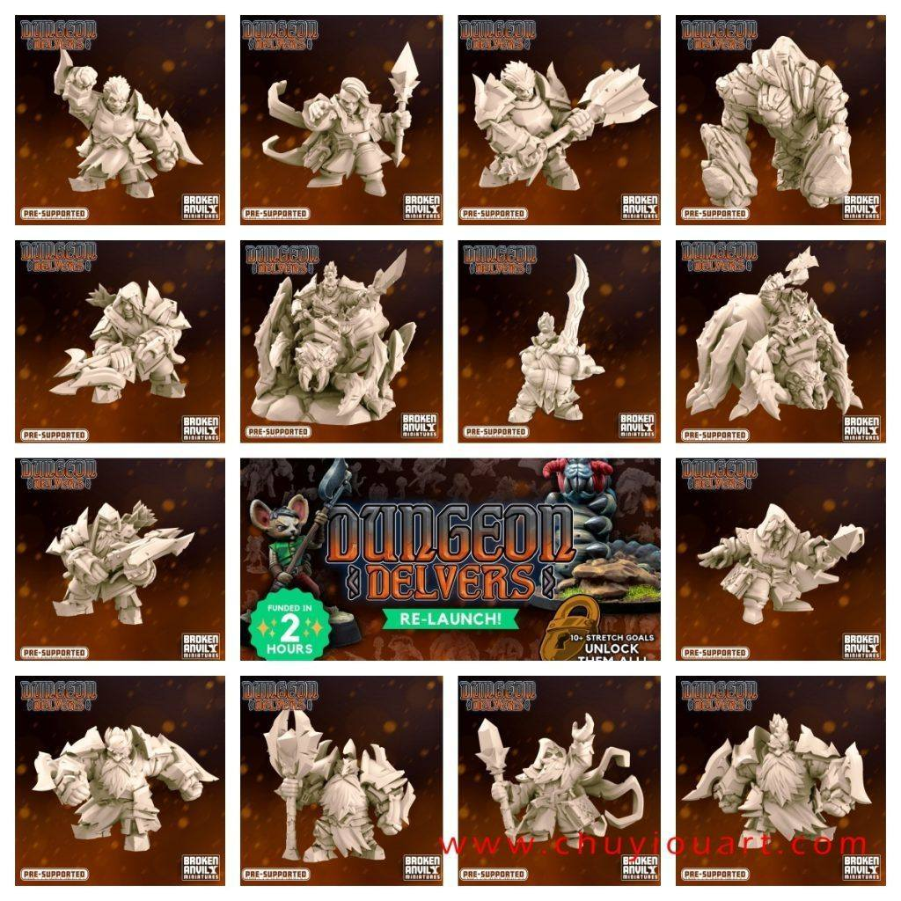
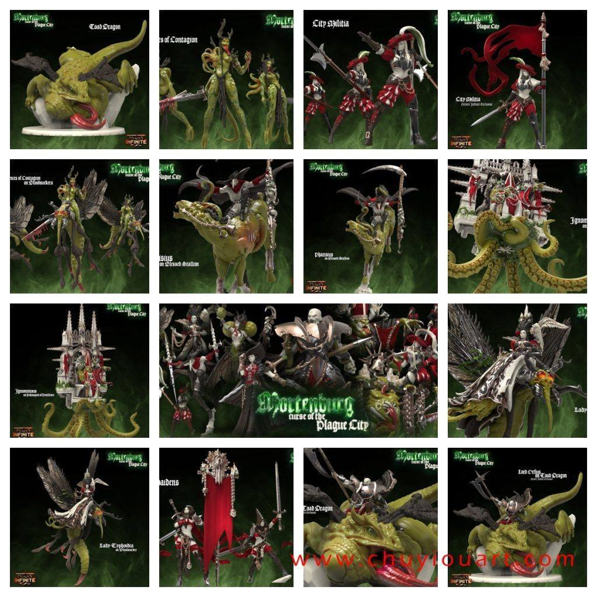

12月07日STl图纸文件分享
提取码
t8bu1.双城之战——金克斯和蔚，增加了雕像形态，模型质量不错。


2.胜利女神——露菲，礼物盒子场景，作为圣诞素材会很好。

3.原神——雷電将軍，模型素质比较好。

4.地下墓穴系列模型，十几个小模型的合集，战棋和场景用。

5.英雄和生物机械设计，这个模型包主要补充昨天的内容。

链接: https://pan.baidu.com/s/1NqgAsw6g8ryr4yDnX6u-eQ 提取码: t8bu
以上内容仅供个人使用（非商用）
ONLY for PERSONAL (NON-COMMERCIAL) use.
加群获得更多免费模型！

可加微信备注“模型资源”入群：chuyimeishu01